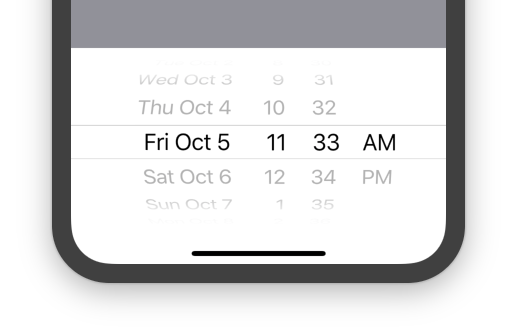

Author:Hanzala
Fast Flutter code compiles to ARM or Intel machine code as well as JavaScript, for fast performance on any device. Multi-Platform Reach users on every screen Deploy to multiple devices from a single codebase: mobile, web, desktop, and embedded devices. Developer Experience Transform your workflow Take control of your codebase with automated testing, developer tooling, and everything else you need to build production-quality apps.
Create beautiful apps faster with Flutter’s collection of visual, structural, platform, and interactive widgets. In addition to browsing widgets by category, you can also see all the widgets in the widget index.
MergeSemantics class Null safety A widget that merges the semantics of its descendants. Causes all the semantics of the subtree rooted at this node to be merged into one node in the semantics tree. For example, if you have a widget with a Text node next to a checkbox widget, this could be used to merge the label from the Text node with the "checked" semantic state of the checkbox into a single node that had both the label and the checked state. Otherwise, the label would be presented as a separate feature than the checkbox, and the user would not be able to be sure that they were related.
CustomScrollView class Null safety A ScrollView that creates custom scroll effects using slivers. A CustomScrollView lets you supply slivers directly to create various scrolling effects, such as lists, grids, and expanding headers. For example, to create a scroll view that contains an expanding app bar followed by a list and a grid, use a list of three slivers: SliverAppBar, SliverList, and SliverGrid. Widgets in these slivers must produce RenderSliver objects. To control the initial scroll offset of the scroll view, provide a controller with its ScrollController.initialScrollOffset property set.
|  | |
|
progress → double Determines the percentage of spinner ticks that will be shown. Typical usage would display all ticks, however, this allows for more fine-grained control such as during pull-to-refresh when the drag-down action shows one tick at a time as the user continues to drag down. [...] final radius → double Radius of the spinner widget. [...] final runtimeType → Type A representation of the runtime type of the object. read-only, inherited
| widget | attribute | type |
|---|---|---|
| CustomScrollView | column | custom |
| DraggableScrollableSheet | both | Auto |
| GridView | both | automated |